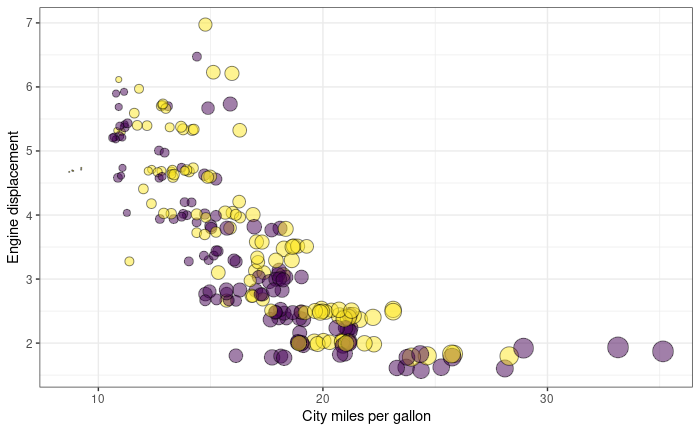
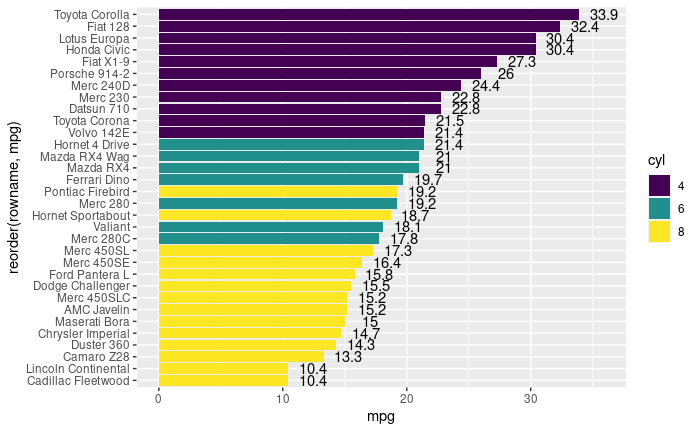
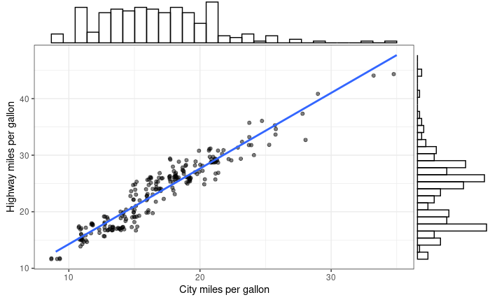

11 ggplot2 examples
인터넷에서 찾은 다음 사이트의 예제를 보면서 다양한 그래프 예제를 실행해 보겠습니다. 코드는 조금씩 변형된 부분이 있으니 참고 부탁 드립니다.
- https://www.r-graph-gallery.com/ggplot2-package.html
- http://r-statistics.co/Top50-Ggplot2-Visualizations-MasterList-R-Code.html
- https://www.datanovia.com/en/blog/ggplot-examples-best-reference/
11.1 Violin plot

library(tidyverse)
library(viridis)
# create a dataset
data <- data.frame(
name=c( rep("A",500), rep("B",500), rep("B",500), rep("C",20), rep('D', 100) ),
value=c( rnorm(500, 10, 5), rnorm(500, 13, 1), rnorm(500, 18, 1), rnorm(20, 25, 4), rnorm(100, 12, 1) )
)
data %>% str
ggplot(data, aes(x=name, y=value, fill=name)) +
geom_violin(width=1.4) +
geom_boxplot(width=0.1, alpha=0.2)
# sample summary
sample_size = data %>%
group_by(name) %>%
summarize(num=n())
xlab <- sample_size %>%
apply(1, function(x)paste0(x, collapse="\n n="))
apply(sample_size, 1, function(x)paste0(x, collapse="\n n="))
ggplot(data, aes(x=name, y=value, fill=name)) +
geom_violin(width=1.4) +
geom_boxplot(width=0.1, alpha=0.2) +
scale_fill_viridis(discrete = TRUE) +
scale_x_discrete(labels=xlab) +
theme(
legend.position="none",
plot.title = element_text(size=11)
) +
ggtitle("A Violin wrapping a boxplot") +
xlab("")11.2 Bubble plot

mpg %>% str
# Most basic bubble plot
ggplot(mpg, aes(x=cty, y=displ, size = hwy)) +
geom_point(alpha=0.7, position="jitter") ggplot(mpg, aes(x=cty, y=displ, size = hwy)) +
geom_point(alpha=0.3, position="jitter") +
scale_size(range = c(.1, 7), name="")ggplot(mpg, aes(x=cty, y=displ, size = hwy, color=year)) +
geom_point(alpha=0.3, position="jitter") +
scale_size(range = c(.1, 7), name="")mpg %>%
mutate(yearf = factor(year)) %>%
ggplot(aes(x=cty, y=displ, size=hwy, color=yearf)) +
geom_point(alpha=0.3, position="jitter") +
scale_size(range = c(.1, 7), name="") mpg %>%
mutate(yearf = factor(year)) %>%
ggplot(aes(x=cty, y=displ, size=hwy, fill=yearf)) +
geom_point(alpha=0.5, position="jitter", shape=21) +
scale_size(range = c(.1, 7), name="") +
scale_fill_viridis(discrete=TRUE, guide=FALSE, option="D") +
theme_bw() +
ylab("Engine displacement") +
xlab("City miles per gallon") +
theme(legend.position = "none")11.3 Barplot with errorbars
ToothGrowth %>% str
df <- ToothGrowth %>%
mutate(dose = as.factor(dose))
df %>% str
## summary
df_summary <- df %>%
group_by(dose) %>%
summarise(sd = sd(len, na.rm = TRUE), len = mean(len))
df_summary
ggplot(df_summary, aes(x=dose, y=len, fill=dose)) +
geom_bar(stat = "identity", color = "black", width = 0.5) +
geom_errorbar(aes(ymin = len, ymax = len+sd), width = 0.2) 11.4 horizontal barplot

df <- mtcars %>%
rownames_to_column() %>%
as_data_frame() %>%
mutate(cyl = as.factor(cyl)) %>%
select(rowname, wt, mpg, cyl)
df
# change fill color by groups and add text labels
ggplot(df, aes(x = reorder(rowname, mpg), y = mpg)) +
geom_col(aes(fill = cyl)) +
geom_text(aes(label = mpg), nudge_y = 2) +
coord_flip() +
scale_fill_viridis_d()11.5 Circular barplot

# Create dataset
n <- 70
data <- data.frame(
id = seq(1, n),
individual=paste( "Mister ", seq(1,n), sep=""),
group=c( rep('A', 10), rep('B', 30), rep('C', 14), rep('D', n-10-30-14)) ,
value=sample( seq(10,100), n, replace=T)
)
data %>% str
# introduce NA
empty_bar_idx <- sample(1:n, 10)
data[empty_bar_idx,c(2:4)] <- c(NA, NA, NA)
label_data <- data
number_of_bar <- nrow(label_data)
angle <- 90 - 360 * (label_data$id-0.5) /number_of_bar # I substract 0.5 because the letter must have the angle of the center of the bars. Not extreme right(1) or extreme left (0)
label_data$hjust <- ifelse( angle < -90, 1, 0)
label_data$angle <- ifelse(angle < -90, angle+180, angle)
data %>%
ggplot(aes(x=as.factor(id), y=value, fill=group)) +
geom_bar(stat="identity") +
ylim(-100,120) +
theme_minimal() +
theme(
axis.text = element_blank(),
axis.title = element_blank(),
panel.grid = element_blank(),
plot.margin = unit(rep(-1,4), "cm")
) +
coord_polar(start = 0) +
geom_text(data=label_data, aes(x=id, y=value+10, label=individual, hjust=hjust), color="black", fontface="bold", alpha=0.6, size=2.5, angle= label_data$angle, inherit.aes = FALSE ) 데이터 정렬 후 plot

data2 <- data %>%
arrange(group, value) %>%
mutate(id2=1:n())
label_data2 <- data2
number_of_bar <- nrow(label_data2)
angle <- 90 - 360 * (label_data2$id2-0.5) /number_of_bar # I substract 0.5 because the letter must have the angle of the center of the bars. Not extreme right(1) or extreme left (0)
label_data2$hjust <- ifelse( angle < -90, 1, 0)
label_data2$angle <- ifelse(angle < -90, angle+180, angle)
data2 %>%
ggplot(aes(x=as.factor(id2), y=value, fill=group)) +
geom_bar(stat="identity") +
ylim(-100,120) +
theme_minimal() +
theme(
axis.text = element_blank(),
axis.title = element_blank(),
panel.grid = element_blank(),
plot.margin = unit(rep(-1,4), "cm")
) +
coord_polar(start = 0) +
geom_text(data=label_data2, aes(x=id2, y=value+10, label=individual, hjust=hjust), color="black", fontface="bold",alpha=0.6, size=2.5, angle= label_data$angle, inherit.aes = FALSE ) 11.6 Stacked area chart
library(babynames)
babynames %>% str
# Load dataset from github
data <- babynames %>%
filter(name %in% c("Amanda", "Jessica", "Patricia", "Deborah", "Dorothy", "Helen")) %>%
filter(sex=="F")
# Plot
p <- data %>%
ggplot(aes(x=year, y=n, fill=name, text=name)) +
geom_area( ) +
scale_fill_viridis(discrete = TRUE) +
ggtitle("Popularity of American names in the previous 30 years") +
theme() +
xlab("Birth year") +
ylab("Number of babies")
p
p + facet_wrap(~name, scale="free_y")11.7 Density plot

# Plot
g <- ggplot(mpg, aes(cty))
g + geom_density(aes(fill=factor(cyl)), alpha=0.8) +
labs(title="Density plot",
subtitle="City Mileage Grouped by Number of cylinders",
caption="Source: mpg",
x="City Mileage",
fill="# Cylinders")11.8 Waffle chart
var <- mpg$class # the categorical data
## Prep data (nothing to change here)
nrows <- 10
df <- expand.grid(y = 1:nrows, x = 1:nrows)
categ_table <- round(table(var) * ((nrows*nrows)/(length(var))))
categ_table
df$category <- factor(rep(names(categ_table), categ_table))
# NOTE: if sum(categ_table) is not 100 (i.e. nrows^2), it will need adjustment to make the sum to 100.
## Plot
df %>% str
ggplot(df, aes(x = x, y = y, fill = category)) +
geom_tile(color = "black", size = 0.5) 
ggplot(df, aes(x = x, y = y, fill = category)) +
geom_tile(color = "black", size = 0.5) +
scale_x_continuous(expand = c(0, 0)) +
scale_y_continuous(expand = c(0, 0), trans = 'reverse') +
scale_fill_brewer(palette = "Set3") +
labs(title="Waffle Chart", subtitle="'Class' of vehicles",
caption="Source: mpg") +
theme(plot.title = element_text(size = rel(1.2)),
axis.text = element_blank(),
axis.title = element_blank(),
axis.ticks = element_blank(),
legend.title = element_blank(),
legend.position = "right")11.9 Marginal histogram

library(ggExtra)
# Scatterplot
p <- ggplot(mpg, aes(x=cty, y=hwy)) +
geom_point(position="jitter", alpha=0.5) +
geom_smooth(method="lm", se=F) +
theme_bw() +
theme(
legend.position = "none"
) +
xlab("City miles per gallon") +
ylab("Highway miles per gallon")
p
ggMarginal(p, type = "histogram", fill="transparent")
ggMarginal(p, type = "density", fill="transparent")
library(ggpubr)
# Grouped Scatter plot with marginal density plots
ggscatterhist(
iris,
x = "Sepal.Length",
y = "Sepal.Width",
color = "Species",
size = 3,
alpha = 0.6,
palette = c("#00AFBB", "#E7B800", "#FC4E07"),
margin.params = list(fill = "Species", color = "black", size = 0.2)
)11.10 Density ridgeline plots

library(ggridges)
ggplot(iris, aes(x = Sepal.Length, y = Species)) +
geom_density_ridges(aes(fill = Species)) +
scale_fill_manual(values = c("#00AFBB", "#E7B800", "#FC4E07"))
이 저작물은 크리에이티브 커먼즈 저작자표시-비영리-변경금지 4.0 국제 라이선스에 따라 이용할 수 있습니다.